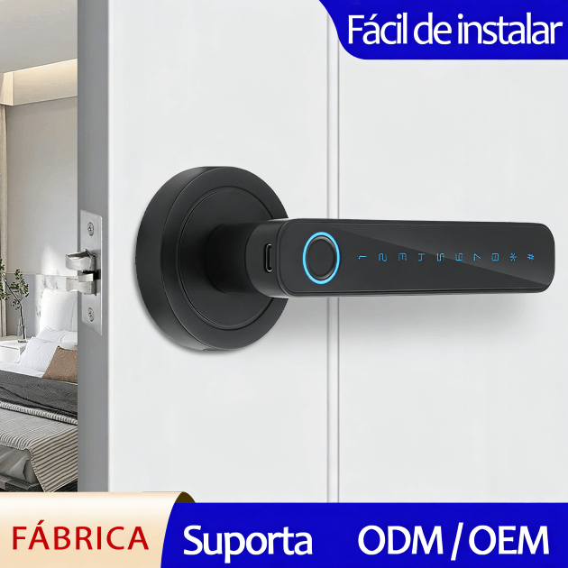
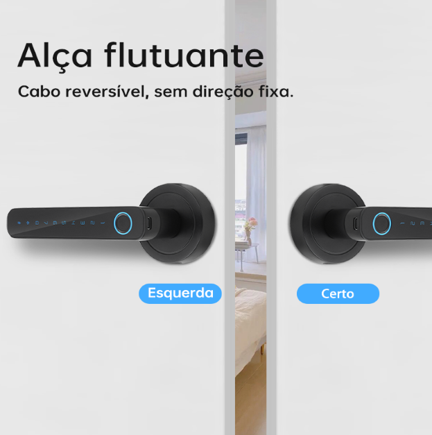
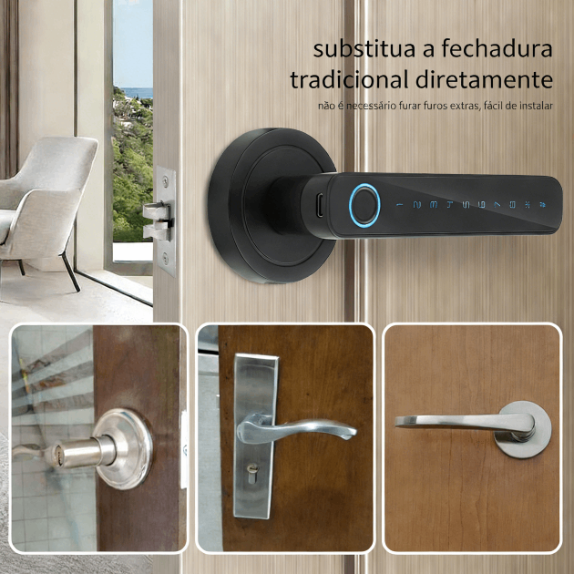

WF-F3 Fechadura de Maçaneta com Impressão Digital & Palavra‑Passe
Desbloqueio 4‑em‑1 | Partilha de Palavra‑Passe Dinâmica | Instalação Sem Perfuração
- Marca & Modelo: WAFU WF-F3
- Material: Corpo monobloco em liga de alumínio, anodizado ≥ grau 8 anti‑corrosão
- Métodos de Desbloqueio: Impressão digital + palavra‑passe + App Tuya Smart + chave mecânica (4‑em‑1)
- Funcionalidades Principais: Partilha remota de palavra‑passe dinâmica/temporária, palavra‑passe fantasma anti‑espreita
- Autonomia: 4 × pilhas AAA ≈ 180 dias de duração ultra‑longa, porta Type‑C para energia de emergência, aviso de bateria fraca
- Aplicações: Casa, apartamento, escritório, dormitório escolar, hotel B&B
- Regiões de Exportação: Destaque em múltiplas plataformas na Europa, América do Sul, Sudeste Asiático, América do Norte e Médio Oriente
- Personalização: OEM/ODM, autorização de marca, embalagens multilingue
Introdução ao Produto
A WF-F3 fechadura de maçaneta com impressão digital e palavra‑passe utiliza um corpo monobloco em liga de alumínio de alta qualidade, suportando até 20 impressões digitais e grande capacidade de armazenamento de palavras‑passe — ideal para satisfazer as necessidades de fechaduras inteligentes de um apartamento completo, pequeno hotel ou escritório. O inovador algoritmo de palavra‑passe dinâmica gera códigos temporários de 6 dígitos offline e com tempo limitado, permitindo a entrada de visitantes, equipas de limpeza ou estafetas, expirando automaticamente depois, com total segurança e conveniência.
A tecnologia de palavra‑passe fantasma anti‑espreita permite inserir dígitos aleatórios antes e depois do código real, prevenindo eficazmente fugas de segurança. O design reversível para portas de 35–55 mm, com instalação sem perfuração e sem fios, permite que até utilizadoras iniciantes concluam a montagem em apenas 3 minutos. A porta Type‑C para energia de emergência elimina a preocupação com falta de bateria. Disponível em stock, com personalização OEM/ODM.
Detalhes do Produto
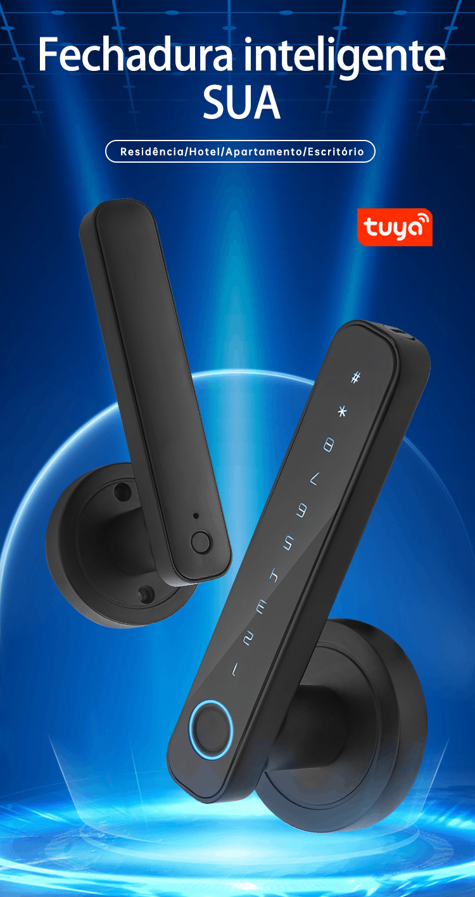
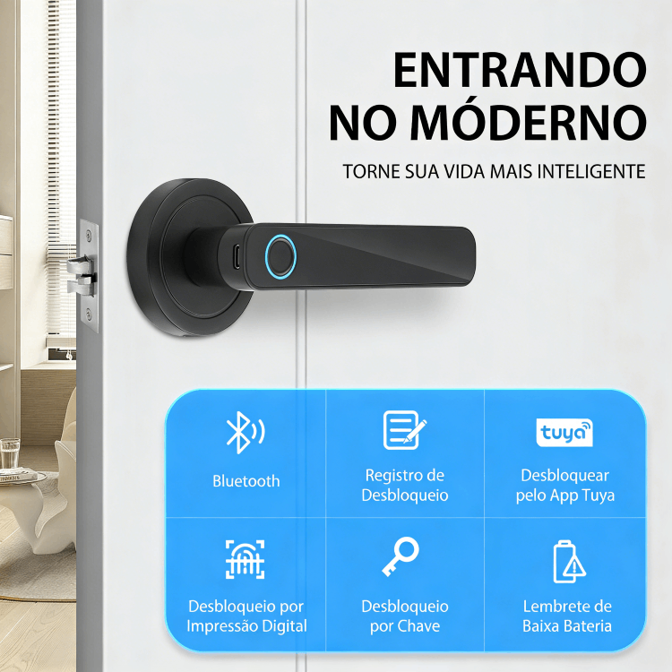
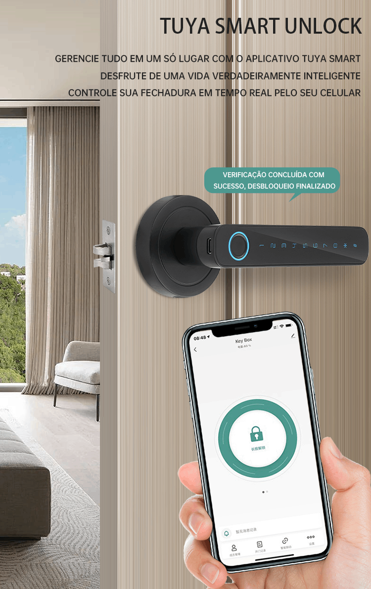
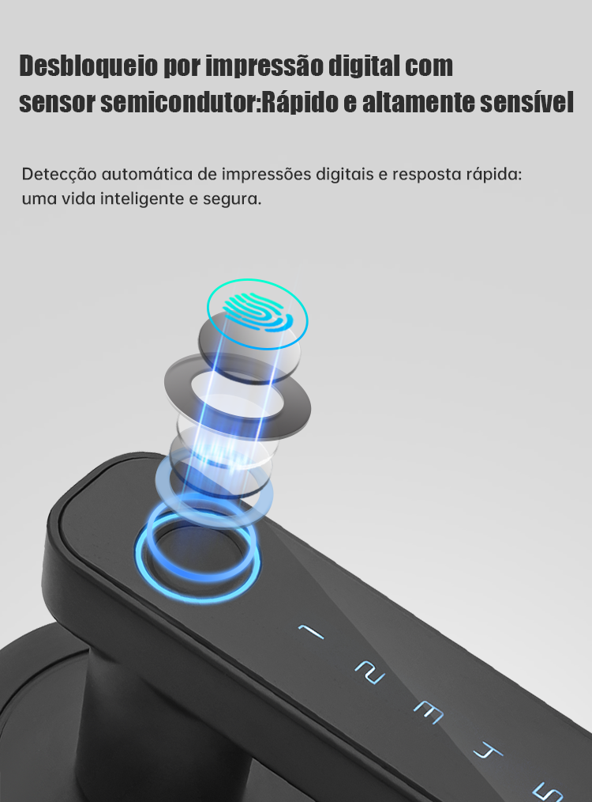
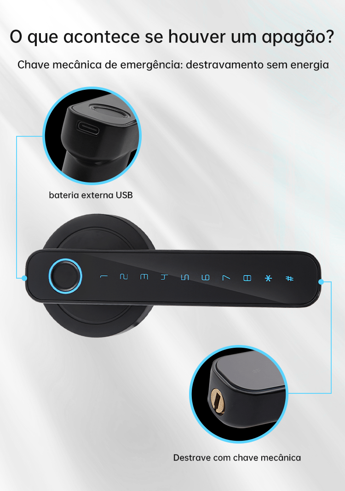
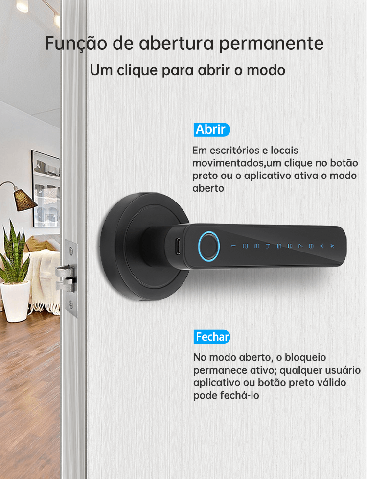
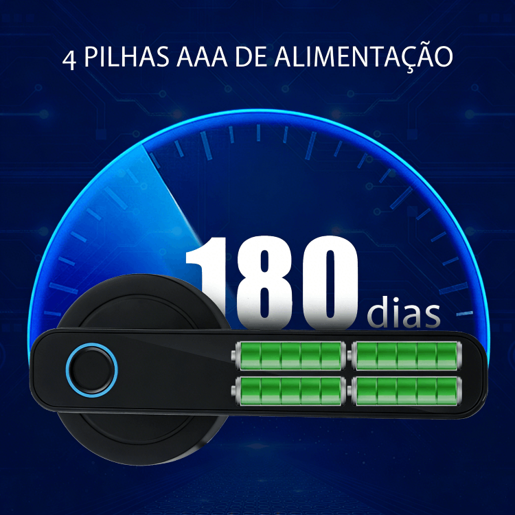
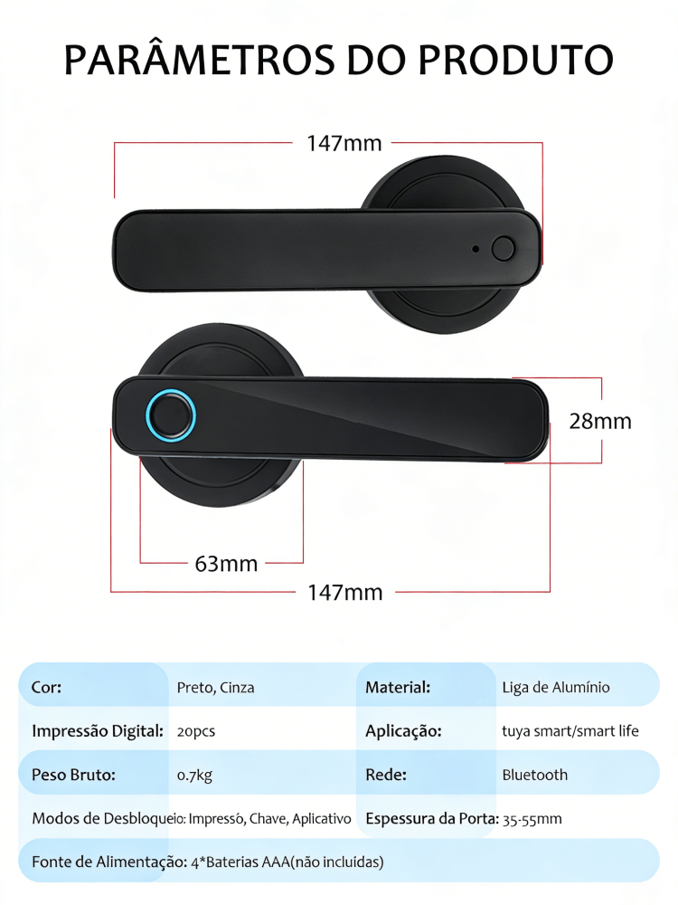
Cenários de Aplicação Principais

Residência
A capacidade para 100 utilizadores armazena facilmente as impressões digitais de toda a família; partilhe palavras‑passe dinâmicas com familiares ou equipas de limpeza, que expiram automaticamente após a utilização.

Dormitório Escolar
Configuração com um toque para entrada de novos alunos e saída de finalistas, eliminando tarefas manuais.

Hotel
A palavra‑passe dinâmica permite que os hóspedes entrem à chegada; o código expira automaticamente após o check‑out, possibilitando operação sem receção.